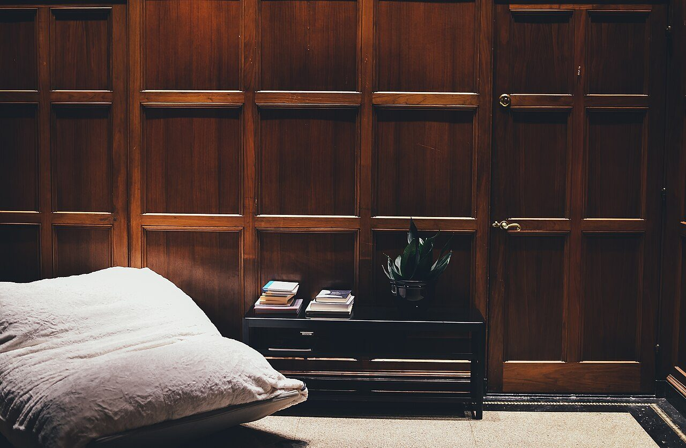

2 / へきめん
店のこと
確認できているのは、所在地とInstagramだけ。それ以外は準備中です。
壁面 / 正面から見える面
ご案内
「かふぇ このはずく」は、愛知県新城市にあるカフェです。営業時間やメニュー、ご予約、駐車場などは準備中のため、ここでは掲載していません。内容が分かり次第、お店のご提供情報に差し替えます。
| 所在地 | 〒441-1944 愛知県新城市門谷上浦４５ |
|---|---|
| 電話 | 準備中 |
| 営業時間 | 準備中 |
| 定休日 | 準備中 |
| ご予約 | 準備中 |
| 駐車場 | 準備中 |
| SNS | Instagram @konohazuku.0422 |

このサイトの見立て
擁壁の六つの部位
- 1
天端てんば
壁のいちばん上にある面です。断面図では、まず最初に目に入るところ。
→ このサイトでは「ホーム」 - 2
壁面へきめん
正面から見える面です。見付(みつけ)とも呼ばれます。
→ このサイトでは「店のこと」 - 3
水抜き穴みずぬきあな
壁の裏にたまる水を外へ逃がすための小さな穴です。
→ このサイトでは「メニュー」 - 4
伸縮目地しんしゅくめじ
温度による伸び縮みを逃がすために入れる継ぎ目です。
→ このサイトでは「口コミ」 - 5
基礎きそ
地面の中に入って壁を支える、土台の部分です。
→ このサイトでは「アクセス」 - 6
裏込めうらごめ
壁の裏側に詰める砕石などの層で、水を通しやすくする役目があります。
→ このサイトでは「写真の出典」
擁壁の部位に見立てたのは制作側の連想で、お店の理念・由来とは無関係です。
ギャラリー(イメージ)
壁面に並べる、四枚の写真。



写真はイメージです。お店の店内や商品を写したものではありません。